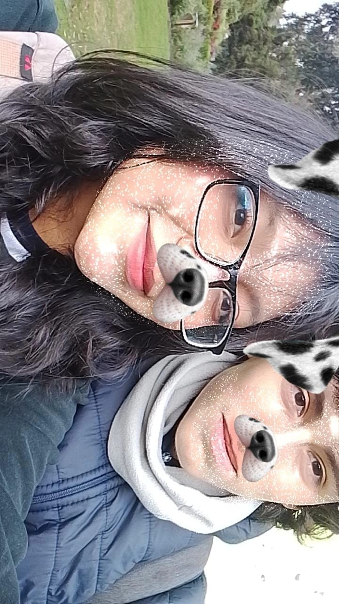
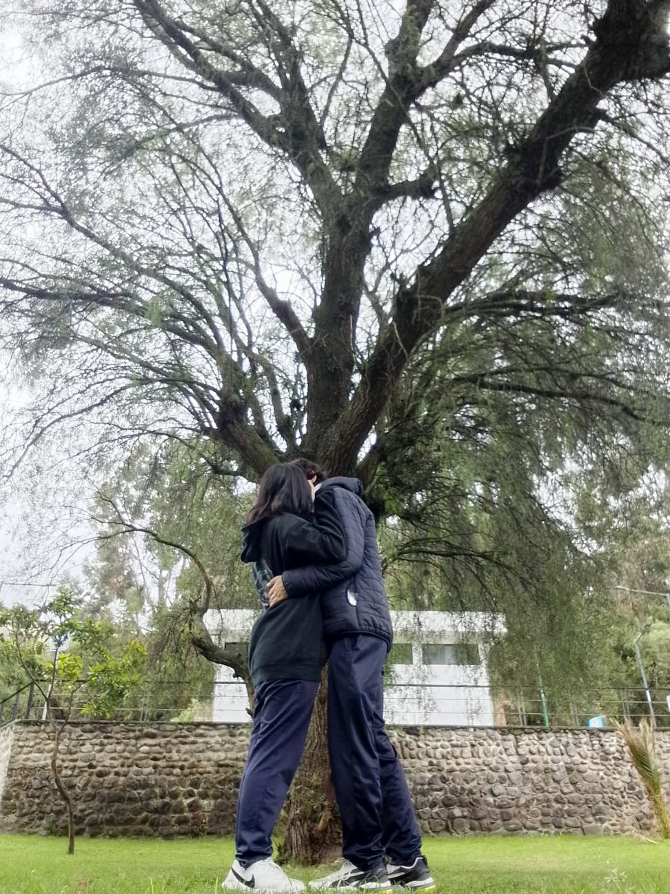
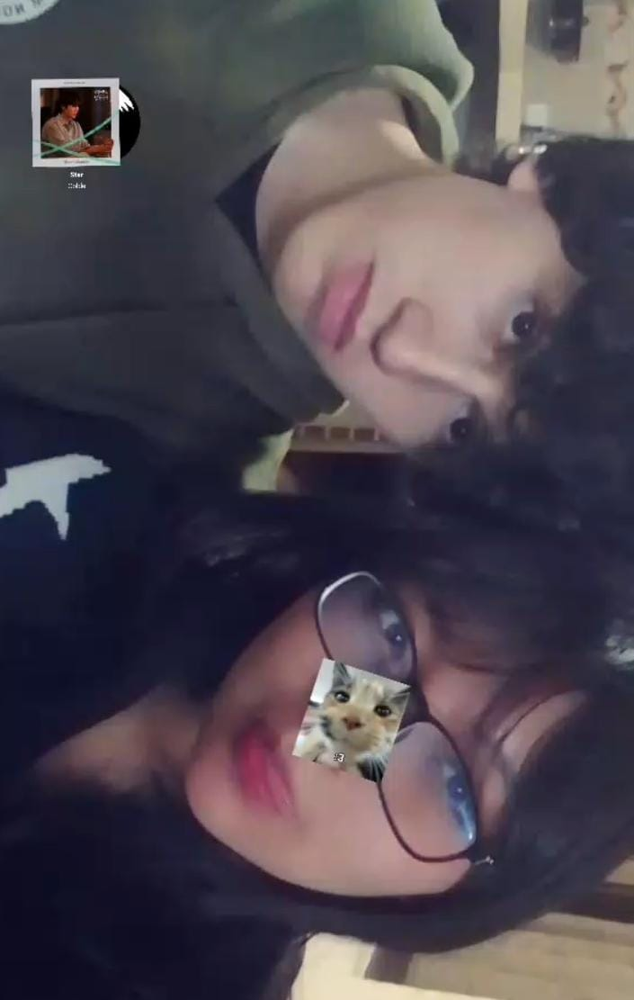

💕 Jesús Alvarado & Celeste Faz 💕
Desde el 18/11/2024 hasta la eternidad ✨

“Tu sonrisa es mi amanecer eterno 🌅”

“En tus abrazos encuentro mi hogar 🏡❤️”

“Eres el poema que nunca deja de escribirse ✨”
Hemos estado juntos por:
🎶 Activar Música